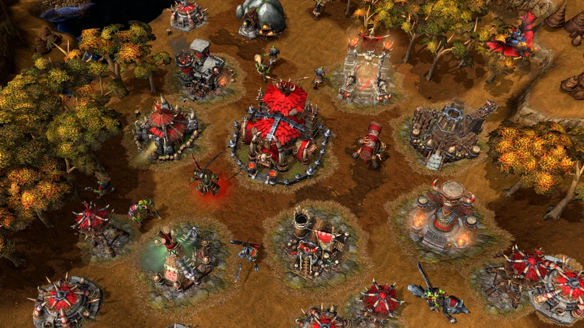
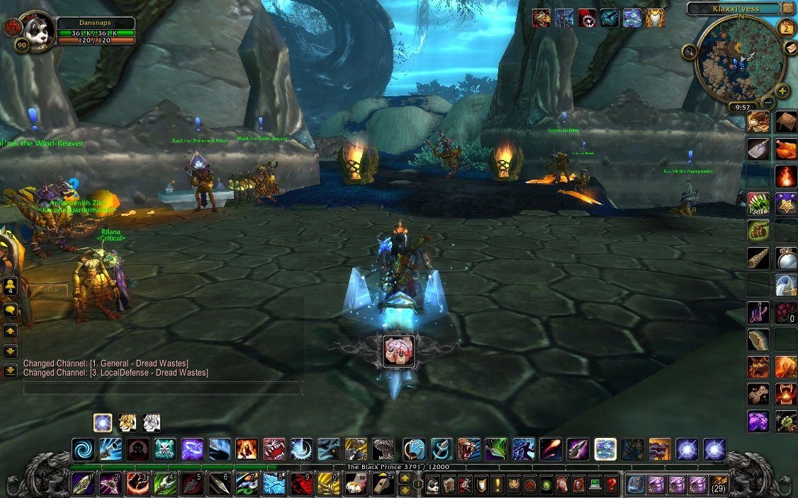

WORL OF WARCRAFT
El primer juego de la serie Warcraft, titulado "Warcraft: Orcs & Humans", fue lanzado en 1994. Es un juego de estrategia en tiempo real (RTS) desarrollado por Blizzard Entertainment, y está ambientado en el mundo ficticio de Azeroth, donde dos facciones principales, los humanos y los orcos, están en guerra.
La historia gira en torno a la llegada de los orcos a Azeroth a través de un portal dimensional, el Portal Oscuro. Estos orcos provienen del mundo de Draenor y, manipulados por fuerzas oscuras, invaden el reino de los humanos. Los humanos, liderados por los Reinos de Azeroth, deben defender su tierra de esta amenaza. Los jugadores pueden elegir jugar como los orcos o los humanos, y cada facción tiene su propia campaña con una historia única.
¿Cómo se juega?
En "Warcraft: Orcs & Humans", los jugadores eligen entre controlar a los humanos o a los orcos, y deben recolectar recursos como oro y madera, construir bases,
entrenar ejércitos y combatir al enemigo en una serie de misiones estratégicas. La jugabilidad se centra en la gestión eficiente de recursos y la toma de decisiones tácticas para cumplir objetivos,
que varían desde la destrucción de la base enemiga hasta la defensa de aliados. Es un juego de estrategia en tiempo real (RTS) donde el equilibrio entre la economía y el combate es clave para la victoria.
Recuerda que lo puedes encontrar en las siguientes pltaformas. Recuerda que lo puedes encontrar en las siguientes pltaformas.



Haz click aquí para saber más del juego y descargarlo. Diviertete!